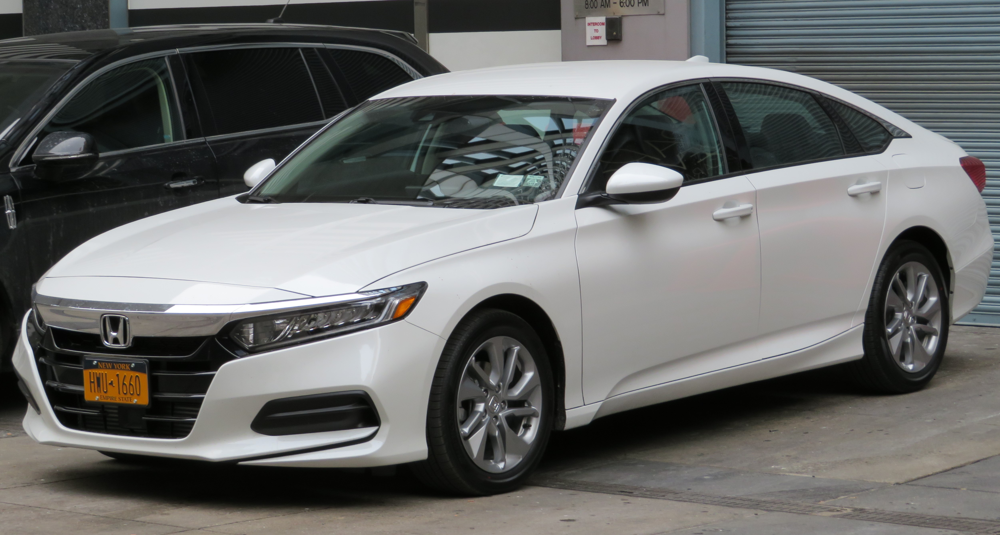
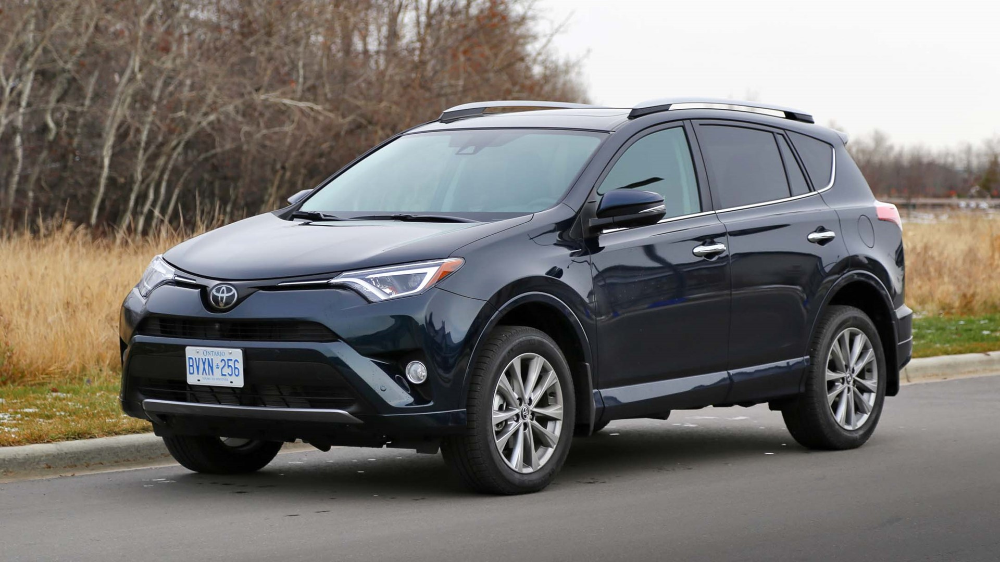
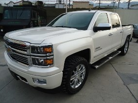
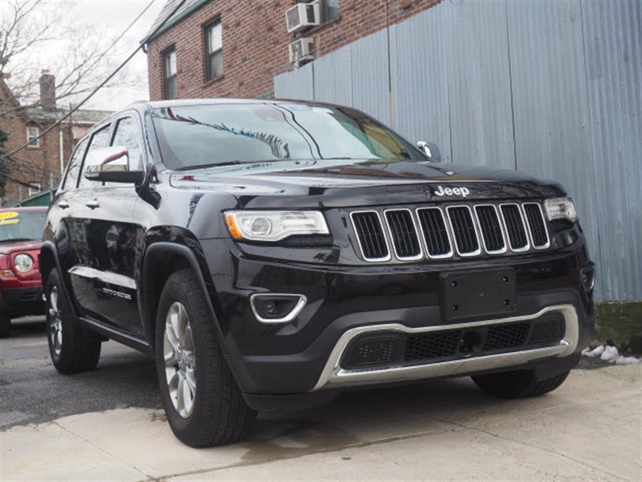
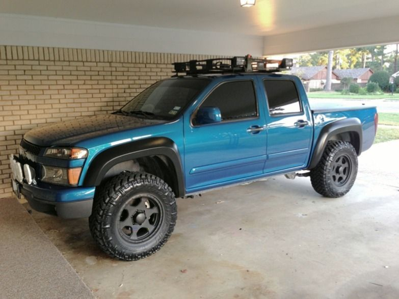
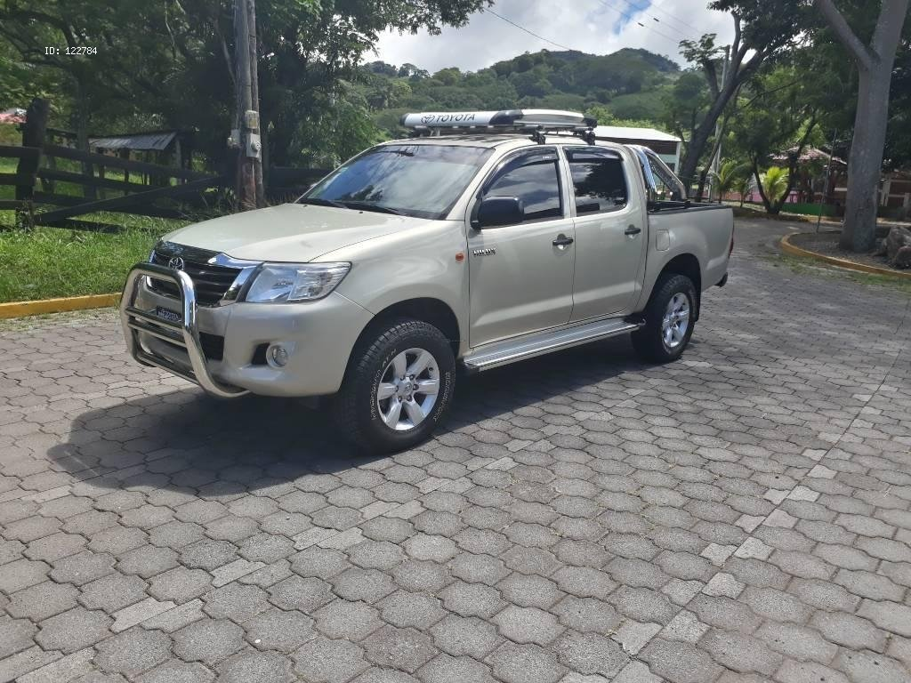

Welcome to the newest cars, Our company dedicates to selling cars with the best maintenance
|
Honda Accord

In the first part of the Accord Tourer test we told you that it is a family-friendly saloon with an attractive design, excellent manufacturing quality and a luggage compartment that may be insufficient for many users. |
Toyota RAV4

Toyota’s RAV4 was one of the original compact crossovers when it arrived on the scene back in 1996, and over those years Toyota has honed in on what consumers are looking for. The latest version, launched last year, builds on three generations of learning and feedback. |
|
Chevrolet Cheyenne Crew Cab Ltz 4x4

If you are looking for a tough long lasting vehicle, this this vehicle is a great option for you.This vehicle is fully loaded with all equipment options. This model has dependability you can trust. |
Jeep Grand Cherokee 2015

The 2015 Jeep Grand Cherokee is a five-seat mid-size SUV that competes with the Toyota 4Runner, Toyota Highlander, Volkswagen Touareg, Ford Explorer and Land Rover Range Rover Sport. It's offered in Laredo, Limited, Overland, Summit and high-performance SRT trim levels. Rear-wheel drive is standard, and three four-wheel-drive systems are available. |
|
2005 Chevrolet Colorado

A roomier cab was a key design goal when the Chevrolet Colorado was launched last year. Designed from the ground up to replace the S10 compact pickup, Colorado brings a fresh name and perspective to GM's line of trucks. That perspective includes more space for humans. |
2014 Toyota HiLux 4x4 SR5 diesel dual-cab

The update announced early this year included a comprehensive raft of safety features making their way across the Toyota HiLux 4x4 range, which the brand says are aimed at making the high-selling dual-cab models better suited as dual-purpose vehicles: in short, these part-time work trucks are now more family-friendly. |